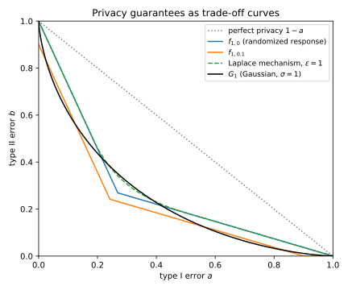
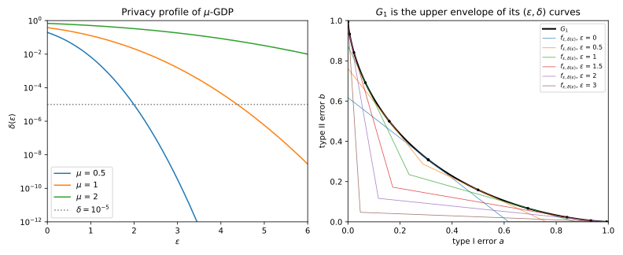
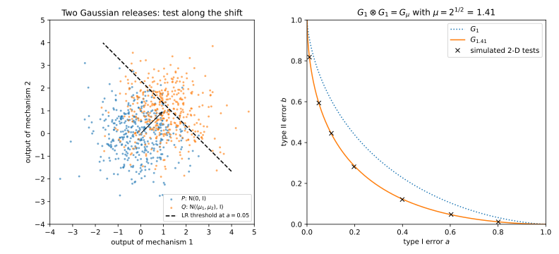
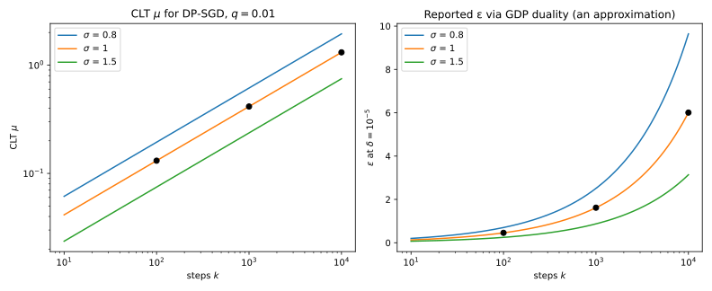

30 f-DP and Gaussian differential privacy
30.1 Why this matters
Every privacy guarantee answers one question: how well can an attacker who sees the output of a mechanism \(M\) tell whether it ran on a dataset \(D\) or on a neighbour \(D'\) that differs in one record? Differential privacy (DP) answers with two numbers \((\varepsilon, \delta)\), Rényi differential privacy (RDP) with a curve over orders \(\alpha\) (Rényi DP), and zero-concentrated differential privacy (zCDP) with one number \(\rho\) (Concentrated differential privacy). But the question is a hypothesis test, and the complete answer to a test is its trade-off function \(T(P, Q)\) between \(P = M(D)\) and \(Q = M(D')\): for each rate \(a\) at which a test may wrongly claim \(D'\) (its type I error), the smallest rate \(b\) at which it must wrongly claim \(D\) (its type II error) (Hypothesis testing). (\(a\) and \(b\), because \(\alpha\) is the Rényi order in this part.)
The one idea is that this curve is the guarantee, and every other notion is a summary of it that throws something away. Gaussian noise makes the curve practical: it produces a one-parameter family of curves \(G_\mu\) that stays in the family under composition, so a pipeline of Gaussian steps has an exact guarantee in one number. And a central limit theorem (CLT) says that many small steps compose to a curve close to some \(G_\mu\), which gives a quick estimate, though not a guarantee, for differentially private stochastic gradient descent (SGD), DP-SGD for short.
30.2 f-DP
A privacy guarantee should say what an attacker cannot do. In testing terms, the strongest statement of that kind is a floor under the attacker’s type II error at every type I error: however it tunes its test, it must miss at least this often. A floor at every \(a\) is a curve, so the definition takes a curve \(f\) as its parameter. A mechanism is \(f\)-differentially private (\(f\)-DP) if \(T(M(D), M(D')) \ge f\) for all neighbours \(D \simeq D'\) (Dong, Roth & Su 2022). Processing an output can only make two distributions harder to tell apart, because any test on the processed output is also a test on the raw one, so the curve can only rise and \(f\)-DP survives post-processing.
The familiar \((\varepsilon, \delta)\)-DP is one such floor, made of two straight lines: \[f_{\varepsilon,\delta}(a) = \max\big(0,\; 1 - \delta - e^\varepsilon a,\; e^{-\varepsilon}(1 - \delta - a)\big). \tag{30.1}\] The first line is the definition read as a test. A test that fires with probability \(a\) under \(D\) may fire with probability at most \(e^\varepsilon a + \delta\) under \(D'\), so it misses \(D'\) with probability at least \(1 - \delta - e^\varepsilon a\). The second line is the same statement with the roles of \(D\) and \(D'\) swapped. The floor starts at \(1 - \delta\), not at 1: \(\delta\) is a free shot, a chance to catch \(D'\) at no type I cost (Figure 30.1).
Two lines are a crude floor. Three mechanisms carry the label “\(\varepsilon = 1\)” in Table 30.1. Randomized response, which reports a bit truthfully with probability \(e/(1 + e)\), sits exactly on \(f_{1,0}\): it is the worst \((1, 0)\)-DP mechanism. The Laplace mechanism matches it at small \(a\) but is more private in the middle, 0.3679 against 0.3204 at \(a = 0.25\). The label cannot tell them apart; the curves can. The floor is set by the worst neighbouring pair; most records are better protected.
| Type I error \(a\) | \(f_{1,0}\) (randomized response) | Laplace, \(\varepsilon = 1\) | Gaussian, \(\sigma = 1\) (\(G_1\)) |
|---|---|---|---|
| 0.01 | 0.9728 | 0.9728 | 0.9076 |
| 0.1 | 0.7282 | 0.7282 | 0.6109 |
| 0.25 | 0.3204 | 0.3679 | 0.3724 |

30.3 Gaussian differential privacy
The Gaussian mechanism’s curve takes two steps to find, neither of which changes any test’s errors. Divide the output by the noise standard deviation and subtract the mean under \(D\): both maps can be undone, so a test on the new output is a test on the old one. What is left is telling \(\mathcal N(0, 1)\) from \(\mathcal N(\mu, 1)\), where \(\mu\) is the distance between the two output means in units of the noise. For a vector output only the direction of the shift carries evidence, since the noise in every other direction looks the same under both hypotheses, so the problem is always one-dimensional. The best test fires when the output exceeds a threshold. At type I error \(a\) the threshold is \(\Phi^{-1}(1 - a)\), where \(\Phi\) is the standard normal distribution function, and a draw from the shifted normal stays below it with probability \[G_\mu(a) = \Phi\big(\Phi^{-1}(1 - a) - \mu\big). \tag{30.2}\] A mechanism is \(\mu\)-Gaussian differential privacy (GDP) if it is \(G_\mu\)-DP. The Gaussian mechanism with noise multiplier \(\sigma\) (the noise standard deviation in units of the \(\ell_2\) sensitivity) shifts the mean by at most one sensitivity, so it is \(1/\sigma\)-GDP, and the bound is exact for a pair that attains the sensitivity. For Gaussian noise, \(\mu\) is the curve, not a bound with slack.
It reads as attack errors. A count released with \(\sigma = 1\) is 1-GDP, so at a 1% false-positive rate, whatever the attacker knows about the rest of the data, it detects the presence of a record at most 9.24% of the time (\(G_1(0.01) = 0.9076\)); at a 10% false-positive rate its power is at most 0.3891. Dong et al. suggest that \(\mu \le 0.5\) is a reasonable guarantee and \(\mu \ge 6\) promises almost nothing.
To report \((\varepsilon, \delta)\) without losing anything, use the shape of the curve. A trade-off curve is convex, and a convex curve is the upper envelope of the straight lines that touch it. Each touching line is one \((\varepsilon, \delta)\) floor, so a symmetric curve is the same guarantee as being \((\varepsilon, \delta(\varepsilon))\)-DP for every \(\varepsilon \ge 0\) at once. That function, the privacy profile, has a closed form for \(G_\mu\): \[\delta(\varepsilon) = \Phi\Big(-\frac{\varepsilon}{\mu} + \frac{\mu}{2}\Big) - e^\varepsilon\,\Phi\Big(-\frac{\varepsilon}{\mu} - \frac{\mu}{2}\Big). \tag{30.3}\] In words, take the test whose curve has slope \(-e^\varepsilon\); the first term is its power and the second is \(e^\varepsilon\) times its type I error, so \(\delta\) is how far that test beats what pure \(\varepsilon\)-DP would allow. This is the same formula as the analytic Gaussian calibration of The Laplace and Gaussian mechanisms. \(\delta(\varepsilon)\) falls as \(\varepsilon\) grows, so to report \(\varepsilon\) at a target \(\delta\) you solve by bisection (Table 30.2).
| \(\mu\) | 0.5 | 1 | 2 |
|---|---|---|---|
| \(\varepsilon\) at \(\delta = 10^{-5}\) | 1.9931 | 4.3772 | 9.9973 |
The profile also explains what a small \(\delta\) costs. \(\delta\) is set by the first term, a normal tail, and a normal tail falls like \(e^{-x^2/2}\), so reaching \(\delta\) needs \(x = \varepsilon/\mu - \mu/2\) of about \(\sqrt{2\ln(1/\delta)}\), and \(\varepsilon\) grows roughly like \(\mu\sqrt{2\ln(1/\delta)}\). Each decade of \(\delta\) therefore costs extra \(\varepsilon\) in proportion to \(\mu\), a little less with each decade: at \(\mu = 1\), going from \(\delta = 10^{-4}\) to \(10^{-5}\) to \(10^{-6}\) raises \(\varepsilon\) from 3.8044 to 4.3772 to 4.8866, and at \(\mu = 2\) the steps are about twice as large.

The whole profile loses nothing, but one point of it does. “1-GDP” implies “\((4.3772, 10^{-5})\)-DP”, but the single pair is one touching line and permits far more: at \(a = 0.1\) it allows \(b = 0.0113\), while \(G_1(0.1) = 0.6109\) (Figure 30.2, right). Report \(\mu\), or the noise multiplier, along with any pair.
30.4 Composition
An attacker who sees two outputs with independent noise faces the joint distributions, and their trade-off curve is the composed guarantee. For two Gaussian releases the joint problem is a shift in two dimensions, by \(\mu_1\) along one axis and \(\mu_2\) along the other. Only the direction of the shift carries evidence, as before, so this is a one-dimensional shift by the length of that vector, \(\sqrt{\mu_1^2 + \mu_2^2}\) (Figure 30.3). Repeating the argument, \(k\) steps compose to \[G_{\mu_1} \otimes \dots \otimes G_{\mu_k} = G_\mu, \qquad \mu = \sqrt{\mu_1^2 + \dots + \mu_k^2}, \tag{30.4}\] even when each step is chosen after seeing the earlier outputs, and no better bound holds in general (Dong et al. 2022). \(\mu^2\) adds, just as the variances of independent noises add. Full-batch noisy gradient descent with noise multiplier \(\sigma\) for \(k\) steps is therefore exactly \(\sqrt k/\sigma\)-GDP. zCDP does the same arithmetic with \(\rho = \mu^2/2\), but ends with an RDP bound on the curve rather than the curve.

Two 1-GDP releases compose to \(G_{1.4142}\), four to \(G_2\), and 100 releases with \(\sigma = 10\) each to \(G_1\). Four 1-GDP releases are therefore \(\varepsilon = 9.9973\) at \(\delta = 10^{-5}\). Suppose instead you first turn each release into one \((\varepsilon, \delta)\) point, giving each a quarter of the \(\delta\) budget, \((4.6902, 2.5\times10^{-6})\), and then add the points by basic composition. You get \(\varepsilon = 18.7607\), almost twice as large, because each point had already dropped most of its curve. Compose curves, not points.
For curves that are not Gaussian there is no closed form, and composing \((\varepsilon, \delta)\) guarantees exactly is computationally intractable when the steps differ. Numerical accountants instead compose the distribution of the privacy loss by convolution (Numerical accounting). A subsampled step’s curve is not Gaussian either, which is where the CLT comes in.
30.5 The central limit theorem and DP-SGD
The privacy loss of an output is the log of how much more likely it is under \(D\) than under \(D'\). Independent outputs have densities that multiply, so the loss of a composition is the sum of the per-step losses. A sum of many small independent terms is nearly normal, and a normal privacy loss is exactly what a Gaussian curve has. So many small steps compose to roughly some \(G_\mu\), whatever the steps were.
DP-SGD is the case that matters. Each step runs on a Poisson sample that includes each record with probability \(q\), clips each gradient and adds Gaussian noise with noise multiplier \(\sigma\). When \(q\) is small the record is usually absent, so each step leaks little. To leading order in \(q\), one step’s privacy loss has mean \(q^2(e^{1/\sigma^2} - 1)/2\) and variance \(q^2(e^{1/\sigma^2} - 1)\), and a loss whose variance is twice its mean is exactly the shape of a Gaussian curve’s loss, whose variance is \(\mu^2\). Adding \(k\) steps adds the variances, which gives, under add/remove neighbours, as \(k \to \infty\) with \(q\sqrt k\) held fixed, \[\mu = q\sqrt{k\big(e^{1/\sigma^2} - 1\big)} \tag{30.5}\] (Bu, Dong, Long & Su 2020). Compared with full-batch training, \(\sqrt k/\sigma\), subsampling multiplies \(\mu\) by about \(q\sigma\sqrt{e^{1/\sigma^2} - 1}\), which is \(q \times 1.3108\) at \(\sigma = 1\).
This is a limit, used at finite \(k\) as an approximation. It is not a bound, and for the running example, \(q = 0.01\) and \(\sigma = 1\), it errs on the unsafe side. Table 30.3 turns each \(\mu\) into \(\varepsilon\) at \(\delta = 10^{-5}\) and compares it with a numerical accountant’s bracket, whose lower end is a lower bound on the true \(\varepsilon\), exact up to a small quadrature error. At \(k = 10{,}000\) the CLT says 6.0071; the true \(\varepsilon\) is at least 6.1377 (Figure 30.4).
| Steps \(k\) | CLT \(\mu\) | CLT \(\varepsilon\) at \(10^{-5}\) | Numerical accountant \(\varepsilon\) | Full batch, \(\mu = \sqrt k\) |
|---|---|---|---|---|
| 100 | 0.1311 | 0.4575 | [0.7175, 0.7185] | 10.0 |
| 1,000 | 0.4145 | 1.6177 | [1.8232, 1.8332] | 31.6 |
| 10,000 | 1.3108 | 6.0071 | [6.1377, 6.2377] | 100.0 |

The reason it under-reports is where \(\delta\) lives. A CLT controls the bulk of the loss distribution, but a \(\delta\) of \(10^{-5}\) is decided by rare, large values of the loss, in the tail, where the normal approximation has no control. The error is worst for short runs, furthest from the regime the limit describes: 0.4575 against at least 0.7175 at \(k = 100\). Plugging exactly computed per-step moments into the CLT does not help, and gives an even smaller \(\varepsilon\), 5.9184 at \(k = 10{,}000\). A more exact \(\mu\) is not a more conservative one; only a certified accountant is. Plan with the CLT; report an accountant’s number.
Two more cautions. The formula is specific to Poisson sampling under add/remove neighbours: Dong et al.’s version for fixed-size batches under replace-one neighbours has a different constant, \(\mu = 1.7101\) at \(k = 10{,}000\) here, and the two must not be mixed (Amplification by subsampling). And \(\mu\) is very sensitive to \(\sigma\) through \(e^{1/\sigma^2} - 1\), which is 3.7707 at \(\sigma = 0.8\), 1.7183 at \(\sigma = 1\) and 0.5596 at \(\sigma = 1.5\).
30.6 RDP as a lossy summary of the curve
The curve also shows where RDP accounting leaves slack. An RDP curve records the exponential moments of the privacy loss, one per order. Different loss distributions can share those moments, so the best trade-off curve that the RDP values alone can certify, \(f_{\mathrm{RDP}}\), has to allow the worst of them. It lies below the true curve even for the Gaussian, whose RDP curve is exact. The best \((\varepsilon, \delta)\) any RDP conversion can report is the profile of \(f_{\mathrm{RDP}}\) (From Rényi DP to (ε, δ)).
So the slack of RDP accounting has two parts: the conversion, which a better formula removes, and the gap between \(f_{\mathrm{RDP}}\) and the true curve, which no conversion removes. For 1-GDP, whose RDP curve is \(\varepsilon(\alpha) = \alpha/2\), the RDP summary allows an attacker an advantage of 0.4830 where the best possible is 0.3829, and the best \(\delta(1)\) it can certify is 0.2149, 1.69 times the exact 0.1269. For Gaussian noise on the full data, then, account in GDP, where \(\mu^2\) adds and the profile at the end is exact.
30.7 Code
A GDP accountant needs only the normal distribution function, which the standard library provides through math.erfc:
from math import erfc, exp, sqrt
def normal_cdf(x: float) -> float:
return 0.5 * erfc(-x / sqrt(2))
def gdp_delta(eps: float, mu: float) -> float:
"""The exact delta(eps) of mu-GDP."""
return normal_cdf(-eps / mu + mu / 2) - exp(eps) * normal_cdf(-eps / mu - mu / 2)
def gdp_eps(mu: float, delta: float) -> float:
"""The eps at which mu-GDP reaches delta; delta(eps) falls as eps grows, so bisect."""
lo, hi = 0.0, 500.0
for _ in range(200):
mid = (lo + hi) / 2
lo, hi = (mid, hi) if gdp_delta(mid, mu) > delta else (lo, mid)
return hi
def compose_gdp(*mus: float) -> float:
return sqrt(sum(m * m for m in mus))
def clt_mu_dpsgd(q: float, sigma: float, steps: int) -> float:
"""Approximate mu of Poisson-subsampled DP-SGD. An estimate, not a bound."""
return q * sqrt(steps * (exp(1 / sigma**2) - 1))
print(f"{gdp_eps(1.0, 1e-5):.4f}") # 4.3772
print(f"{gdp_eps(compose_gdp(1, 1, 1, 1), 1e-5):.4f}") # 9.9973
mu = clt_mu_dpsgd(q=0.01, sigma=1.0, steps=10_000)
print(f"{mu:.4f} {gdp_eps(mu, 1e-5):.4f}") # 1.3108 6.0071The last line is the CLT estimate for the running example, below the numerical lower bound 6.1377. The full edition’s script, gaussian_dp.py, computes every number in this chapter, including the numerical brackets:
uv run python code/part04-privacy-accounting/gaussian_dp.py30.8 Cheat sheet
| Result | Formula | Notes |
|---|---|---|
| \(f\)-DP | \(T(M(D), M(D')) \ge f\) for all neighbours | Type I error \(a\), type II error \(b\) |
| \((\varepsilon, \delta)\)-DP as a curve | \(f_{\varepsilon,\delta}(a) = \max(0, 1 - \delta - e^\varepsilon a, e^{-\varepsilon}(1 - \delta - a))\) | Two straight lines |
| \(\mu\)-GDP | \(G_\mu(a) = \Phi(\Phi^{-1}(1 - a) - \mu)\) | Gaussian mechanism: \(\mu = 1/\sigma\), exact |
| Profile | \(\delta(\varepsilon) = \Phi(-\frac\varepsilon\mu + \frac\mu2) - e^\varepsilon\Phi(-\frac\varepsilon\mu - \frac\mu2)\) | Lossless; bisect for \(\varepsilon\) |
| Composition | \(\mu = \sqrt{\sum_i\mu_i^2}\) | Exact for Gaussian steps |
| DP-SGD, CLT | \(\mu \approx q\sqrt{k(e^{1/\sigma^2} - 1)}\) | An approximation, not a bound; under-reports \(\varepsilon\) here |
| RDP from the curve | RDP implies only \(f_{\mathrm{RDP}}\), below the true curve | Slack no conversion removes |
Rules of thumb
- The trade-off curve is the guarantee; \((\varepsilon, \delta)\), RDP and \(\rho\) summarize it. Summarize as late as possible.
- For Gaussian noise without subsampling, account in GDP: \(\mu^2\) adds, and the \((\varepsilon, \delta)\) at the end is exact.
- \(\mu = 1\) means \(\varepsilon \approx 4.4\) at \(\delta = 10^{-5}\); \(\mu = 0.5\) means about 2.
- Use the CLT for DP-SGD to plan, never as the reported guarantee.
30.9 Further reading
- Dong, Roth & Su, “Gaussian Differential Privacy” (Journal of the Royal Statistical Society Series B, 2022): \(f\)-DP, GDP, duality, composition and the CLTs. The discussion sections explain why the curve is the right object.
- Bu, Dong, Long & Su, “Deep Learning with Gaussian Differential Privacy” (Harvard Data Science Review, 2020): the CLT for Poisson-subsampled DP-SGD, with experiments.
- Gopi, Lee & Wutschitz, “Numerical Composition of Differential Privacy” (NeurIPS 2021): an accountant with error bounds, and examples where the CLT under-reports \(\varepsilon\).
- Balle & Wang, “Improving the Gaussian Mechanism for Differential Privacy” (ICML 2018): the exact \((\varepsilon, \delta)\) profile of the Gaussian mechanism and its use for calibration.
Derivations. Every result in this chapter is derived step by step in the full edition’s chapter.